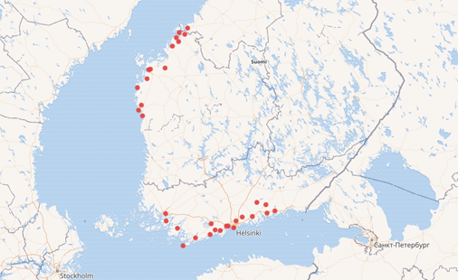

data
data

Kommuner med språk svenska, exkluderande sådana som hör till landskapet Åland. [QUERY]
Wikidata:WikiProject Finnish Elections
I dokumentet beskrivs projektet samt datamodellen.
- Val
- Kommun
- Valkrets
- Kommunfullmäktige
- Partier och lagmansföreningar
- Kandidater
Processen är i skrivande stund (10.2.2017) pågående, men t.ex. kommunerna är klara. Följ status på projektsidan för lägeskoll.

Det gåpr också bra att kombinera huvuddata med externa datasets, och/eller ladda upp dem på Wikidata som hackathon-projekt. Här nedan några användbara.